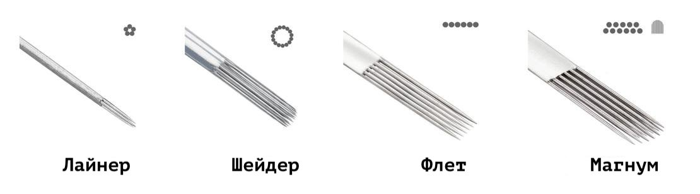
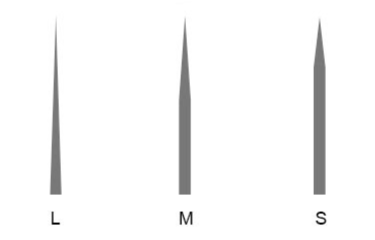

Голки
Для кожного окремого завдання потрібна своя тату голка (картридж), яка матиме необхідну конфігурацію. Від того,
наскільки точно ви підберете потрібну голку (картридж), залежатиме кінцевий результат та комфорт у роботі. Правильно
підібрана спайка голок допоможе вам створити більш чіткі лінії або плавні переходи.
Кожна голка (картридж) для тату машини практично складається з безлічі дрібних голок, напаяних на довгий бар. Для
різних типів робіт потрібні різні форми та щільність спайок. Умовно виділяють два види тату голок (картриджів):
голки (картриджі) для контуру/ліній та голки (картриджі) для тіней та фарбування.
Для контуру:
Round Liner (RL).
Контурні голки (картриджі) є щільною і вузькою напайкою, спаяні по колу контурні голки на кінці з'єднуються в тугий
пучок. Від кількості голок в такому пучку залежить і товщина лінії: чим більше, тим товщі контур.
Вони необхідні для всіх типів ліній, деталізації і начерків.
Для тіней та фарбування:
Magnum, Round Shader.
Голки (картриджі) для тіней і фарбування найчастіше мають плоску напайку в 1-2 ряди, рідше круглу нещільну. З їх
допомогою роблять зафарбовування, розтягують градієнти, створюють м'які та жорсткі тіні.
Класифікація тату голок (картриджів) за типом спайки
Magnum (M1)
Плоска спайка голок, колючі елементи в якій біля основи розташовані в два ряди в шаховому порядку, що гарантує
щільне покриття шкіри пігментом.
Magnum Special (M2)
Плоский спайка голок в два ряди, колючі елементи в якій розташовані один над одним. Ці голки відмінно впораються із
щільним та швидким пофарбуванням.
Round Magnum (RM)
Напайка в 2 ряди для тіней, пофарбування та переходів, один із видів голок типу Magnum. Round Magnum (RM) напаяний
півколом (голки по краях розташовані нижче ніж голки в середині), що дозволяє зафарбовувати шкіру з більш плавними
переходами, без чітких країв.
Round Shader (RS)
В голках цього типу спайка, як і в RL кругла, проте на кінці вони не з'єднуються в одну точку, а, навпаки, розпаяно
широко, а якщо бути точніше, паралельно один одному.
Це і визначає завдання цієї голки: тіні та переходи. Особливо гарні ці голки в м'якій розтушовці та градієнтах.
Magnum Flat (MF)
Голки з плоскою спайкой всіх колючих елементів в один ряд. Використовуються переважно для зафарбовування.

Види заточок голок
Тип заточки голоки для тату машинки - це довжина конуса вістря голки. Умовно розрізняють три типи заточування:
довге, середнє та коротке.
L (long) – довге заточення
М (medium) – середнє заточення
S (short) – коротке заточення

Довге заточення
Довге заточення утримує на собі більше пігменту і глибше занурюється в шкіру, тому його вибирають для робіт
пов'язаних з контурами та лініями.
Середнє заточення
Вони є універсальним інструментом, який добре підходить для більшості видів робіт. Більшість класичних тату голок -
саме такого типу.
Коротке заточення
Коротке заточення чудово підходить для робіт пов'язаних з тінями та переходами
Діаметр голок
Діаметр голки – це товщина кожної голки у спайці. Варто враховувати, що голки одного типу, одного розміру, але з
різним діаметром відрізнятимуться за товщиною.
Ось приклад чотирьох діаметрів голки для тату машинки:
Розмір 6 = 0,2 мм.
Розмір 8 = 0,25 мм.
Розмір 10 = 0,30 мм.
Розмір 12 = 0,35 мм.
Невеликий діаметр краще підходить для опрацювання ліній, а діаметр більше дасть більш ефективне і швидке
зафарбовування. Найчастіше використовуються розміри 10 та 12.